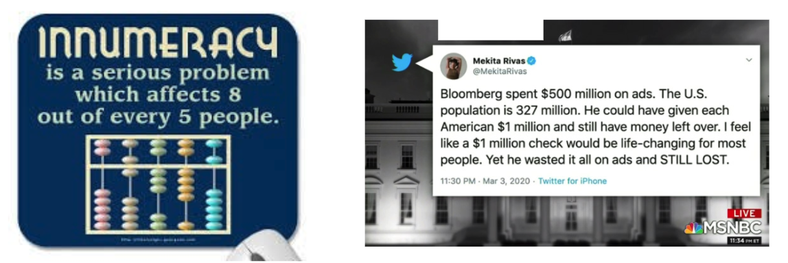

Lesson 2 - Reading Charts Without Getting Fooled
At the end of this lesson, you will be able to:
- Explain what data literacy means and why it matters in everyday life.
- Recognize five common ways charts mislead: truncated axes, cherry-picked time windows, counts without denominators, dual y-axes, and 3-D pie charts.
- List the questions worth asking before you trust any chart you see in a feed, a news story, or an ad.
Data literacy is a survival skill
You already know how to read words critically. If a stranger's post says "everyone agrees this is the best restaurant in Portland," some reflex in you asks: everyone? who counted? do they own the restaurant? That reflex is literacy - not just decoding the words, but questioning them.
Data literacy is the same reflex, pointed at numbers and charts: the ability to read data, understand where it came from, and question what it actually shows. And you need it not because you're headed for a job in analytics (though hey, maybe), but because charts come at you every single day - in your feeds, in news stories, in ads, in the graphics a cable channel flashes for eight seconds. Somebody made every one of those charts, and that somebody made choices: what to include, what to leave out, where the axis starts. Sometimes those choices are innocent. Sometimes they're the whole trick.
And there is a lot of this stuff. For a sense of the sheer volume of data the world generates while you microwave a burrito, check out Domo's Data Never Sleeps 12.0 infographic - millions of messages, searches, and streams per minute. Every chart you meet is somebody's summary of some slice of that flood. The question is always: is it an honest summary?
When number-sense fails: two real examples
Before the chart tricks, a warm-up on plain numbers, because the failures can be spectacular:

The one on the left is a joke ("8 out of every 5 people" - sit with it). The one on the right is not: that tweet was read out, approvingly, on national television. Do the math yourself: $500 million divided among 327 million people is about $1.53 each. Not $1 million each - off by a factor of more than 600,000, and it sailed right past the tweeter, the anchors, and a whole lot of viewers. The lesson isn't "those people are dumb"; it's that nobody's number-sense is automatic. Checking is a habit, and this lesson is about building it - especially for charts, where the misdirection is visual and even sneakier.
The chart-trick catalog
Here are five classics. None of them requires fake data - that's what makes them dangerous. Every one of these charts can be built from perfectly true numbers and still leave you believing something false.
1. The truncated y-axis
A bar chart's whole power is that bar height means amount. But if the y-axis starts somewhere other than zero, that promise is broken. Say two food carts each sold about a thousand orders last month: Cart A sold 1,000 and Cart B sold 1,020 - a 2% difference, basically a coin flip. Now draw the y-axis starting at 990: Cart A's bar is 10 units tall and Cart B's is 30 units tall. Cart B's bar is three times the height, for a 2% difference. Nothing was faked; the chart just cropped away all the context. Whenever bar heights look dramatic, your first move is to check where the axis starts - turning 2% into a cliff is the oldest trick in the book.
2. The cherry-picked time window
Any wiggly line contains whatever story you want, if you get to choose where it starts and stops. A gym that charts its membership from January 2nd to January 31st shows explosive growth (it's January - everyone joins in January); the same line drawn over three years shows the same bump every winter followed by the same slump every spring. Same data, opposite stories. When a chart shows a trend, ask: why this window? What happens if we zoom out - or slide the window left?
3. Counts without denominators
"25 dog breeds have a maximum life span of 15 years!" Is that a lot? You literally cannot know - 25 out of what? Out of 30 breeds it's a dominant pattern; out of 105 (the actual dataset you'll meet in a few lessons) it's about 24%; out of 10,000 it's a rounding error. A raw count with no denominator is a number wearing a trench coat. This one is everywhere in the news: "City A had 500 burglaries, City B only 50" sounds damning until you learn City A has 20 times the population - making it the safer city per person. Whenever you see a count, ask for the rate: out of how many?
4. The dual y-axis
Some charts plot two lines with two different y-axes - one scale on the left, another on the right. Here's the problem: whoever draws the chart chooses both scales independently, which means they can make the two lines cross, converge, or track each other wherever they please. Plot a company's revenue (left axis, in millions) against the number of complaints (right axis, in dozens), and a designer can stretch either axis until the lines tell whichever story the boss prefers. Two lines dancing together on a dual-axis chart proves nothing until you've checked both scales - and asked what the chart would look like if they shared one.
5. The 3-D pie chart
Pie charts are already hard to read (comparing angles is not a human strength - more on that when we get to bar charts). Tilt one into 3-D perspective and it goes from hard to actively deceptive: the slice tilted toward the viewer gets drawn physically larger, so a 20% slice in front can look bigger than a 30% slice in back. Picture a poll result rendered as a tilted pie with the sponsor's preferred answer parked right at the front, looking plump. If a chart is 3-D for no reason, the reason is usually the distortion.
One more thing to file away
There's a sixth trap, big enough to get its own lesson: two things moving together doesn't mean one causes the other. When we get to scatter plots in Lesson 8, we'll see charts practically begging you to conclude "A causes B" - and we'll work out the full list of other explanations. For now, just let the phrase "correlation is not causation" start rattling around in your head.
The questions to ask
Rolling all of this up, here's your pocket checklist for any chart in the wild:
- Who made this, and what do they want me to believe?
- Where does the y-axis start?
- Why this time window and not a wider one?
- Counts or rates - and out of how many?
- Are there two y-axes? (Check both scales.)
- Is it 3-D or otherwise decorated in ways that distort?
- Where did the data come from, and what got left out?
A chart that survives all seven questions has earned some trust. A chart that fails one isn't necessarily lying - but now you know exactly where to poke.
This same reflex reaches well past charts. In Unit 10 we'll point it at your whole feed - fake images, doctored quotes, and headlines engineered to be reshared - and build a routine for checking a claim before you pass it along. Misleading charts are just one dialect of a much bigger language of online persuasion.
Coming up next: enough defense - time for offense. In the next lesson we set up the tool we'll use to make our own (honest!) charts: Google Colab notebooks, plus the Python libraries pandas, matplotlib, and seaborn.